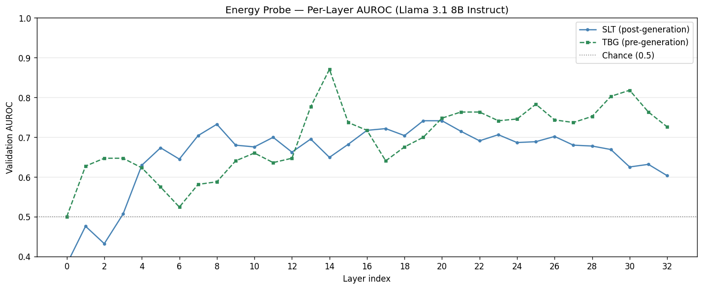
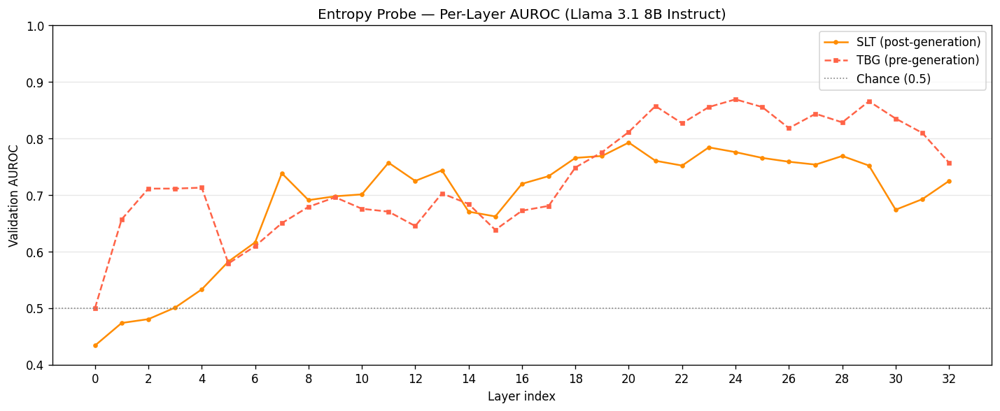
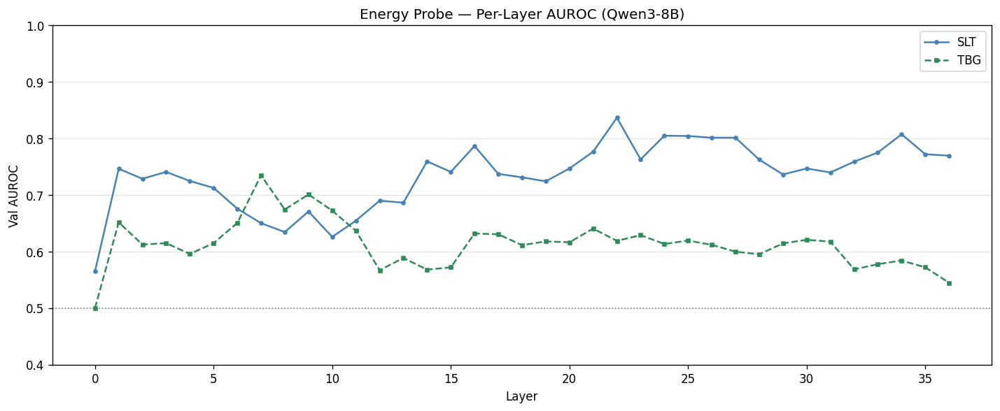
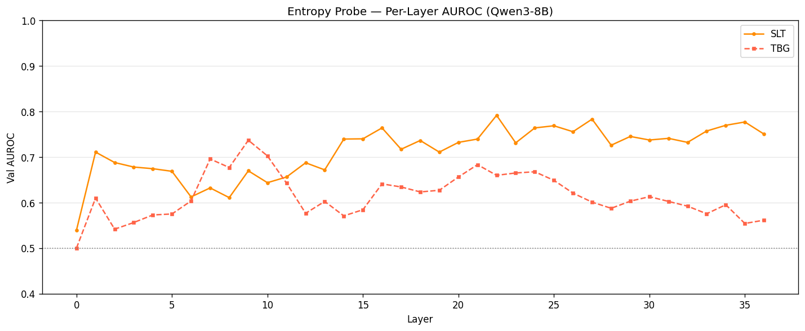

Llama 3.1 8B Instruct — Per-Layer Validation AUROC
(a) Energy Probes

(b) Entropy Probes

Qwen3 8B — Per-Layer Validation AUROC
(c) Energy Probes

(d) Entropy Probes

| Probe |
Llama 3.1 8B |
Qwen3 8B |
|
Best Layer |
Val AUROC |
Best Layer |
Val AUROC |
| TBG Energy |
14 |
0.8706 |
8 |
0.6981 |
| SLT Energy |
19 |
0.7412 |
25 |
0.8201 |
| TBG Entropy |
24 |
0.8693 |
12 |
0.7271 |
| SLT Entropy |
20 |
0.7929 |
25 |
0.7875 |
Figure 7.3 — Per-layer AUROC sweep for all four probes across two models. Each point represents a logistic regression trained
on a single transformer layer's hidden state (4,096 features). Panels (a) and (b) show Llama 3.1 8B results; panels (c) and (d) show Qwen3 8B.
TBG Energy achieves the highest single-layer AUROC on Llama (0.8706 at layer 14), while optimal layers shift across models, demonstrating
that the predictive signal's location is model-dependent. The table summarises peak layers and AUROC values for both models.